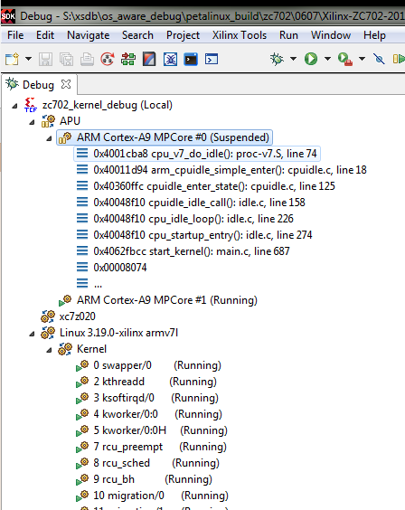

Process/Thread Level Debugging
The Debug view will be updated with the list of processes running on the Linux kernel, once the OS aware debugging is enabled. For details on how to enable OS aware debugging, refer Enabling OS Aware Debug. The processes list will be updated for the first time once the processor core is halted and dynamically there after (new processes will be added to the list and terminated processes will be removed).

A process context can be expanded to see the threads that are part of the process.

Symbol files can be added for a process context to enable source level debugging and see stack trace, variables. Source level breakpoints can also be set. Alternatively, the source level debugging can be enabled by setting the Path Map. The debugger uses Path Map setting to search and load symbols files for all executable files and shared libraries in the system.